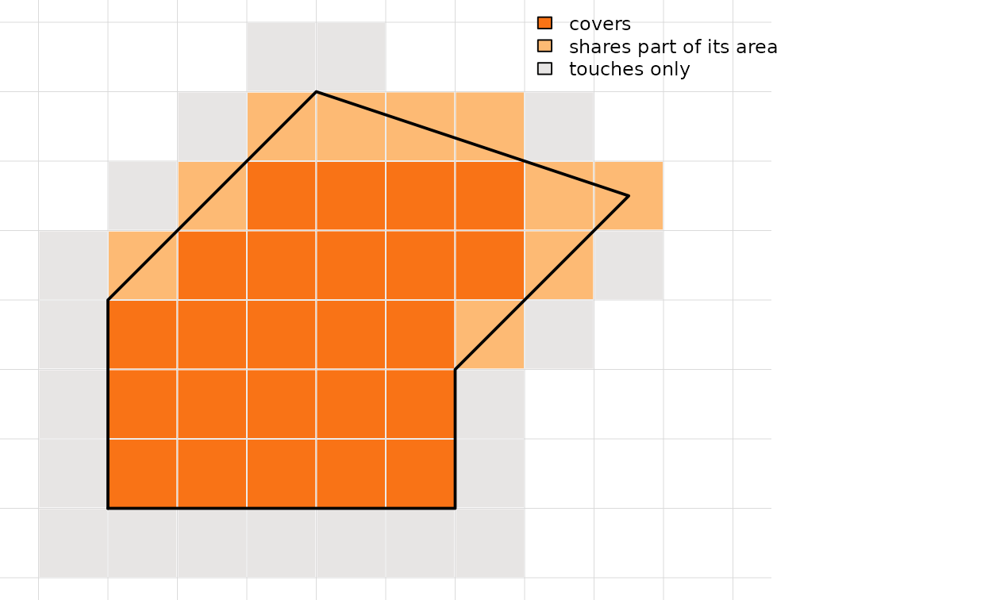
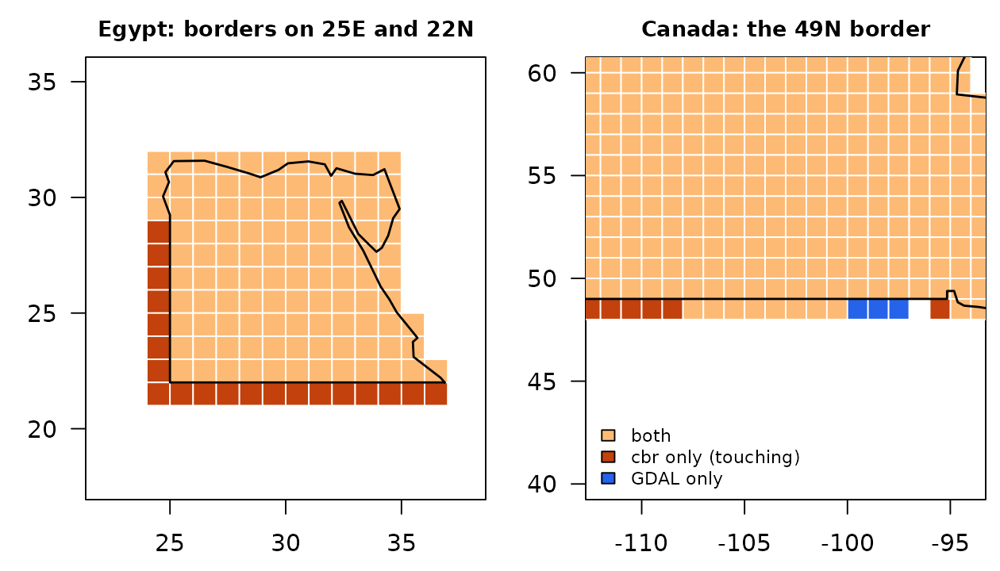

Cell predicates: exact all-touched and slivers
Source:vignettes/cell-predicates.Rmd
cell-predicates.RmdA burn is a lookup table. To ask whether a point is inside a polygon, find the point’s cell: if the cell is in a run the answer is yes, if it has no record the answer is no, and only an edge cell needs the polygon itself.
relate = TRUE takes that idea from points to cells, and
from “inside” to every spatial predicate. For each polygon and each grid
cell it gives the DE-9IM matrix: nine entries saying
how the polygon’s interior, boundary and exterior meet the cell’s
interior, boundary and exterior, each F (empty) or the
dimension 0, 1 or 2 of the
intersection. The crate computes it after the burn, from the geometry,
and only for the cells the polygon’s boundary touches. Every other cell
is already answered by the burn.
One polygon
The polygon from the crate’s book has edges along cell walls and diagonals through cell corners.
library(cbr)
ring <- rbind(c(1, 1), c(6, 1), c(6, 3), c(8.5, 5.5), c(4, 7), c(1, 4), c(1, 1))
g <- wk::wkt(sprintf("POLYGON ((%s))", paste(ring[, 1], ring[, 2], collapse = ", ")))
b <- cb_burn(g, extent = c(0, 10, 0, 8), dimension = c(10, 8), relate = TRUE)
b
#> <cb_burn>
#> grid: 10 col x 8 row
#> extent: x[0, 10] y[0, 8]
#> mode: coverage
#> tables: runs=5, edges=10, lines=0, points=0, notes=0, relations=43
head(b$relations)
#> row col id matrix
#> 1 1 4 1 FF2F01212
#> 2 1 5 1 FF2F01212
#> 3 2 3 1 FF2F01212
#> 4 2 4 1 212101212
#> 5 2 5 1 212101212
#> 6 2 6 1 212101212The relations hold the cells the boundary touches: 43 here. Any
cell’s matrix comes from cb_matrix(), which falls back on
the burn for the rest: a cell in a run is covered
(212FF1FF2), any other is disjoint
(FF2FF1212).
cells <- data.frame(row = c(5, 7, 8, 1, 1), col = c(4, 3, 3, 4, 10),
what = c("deep inside", "above the bottom edge", "below the bottom edge",
"at the top vertex", "far away"))
cells$matrix <- cb_matrix(b, cells$row, cells$col)
cells
#> row col what matrix
#> 1 5 4 deep inside 212FF1FF2
#> 2 7 3 above the bottom edge 212F11FF2
#> 3 8 3 below the bottom edge FF2F11212
#> 4 1 4 at the top vertex FF2F01212
#> 5 1 10 far away FF2FF1212The cell below the bottom edge shares a line with the polygon
(boundary against boundary is 1) and no area. The one at
the top vertex shares a single point (0). Neither has a
record in the burn: no part of them is covered. They are exactly the
cells an all-touched rasterization should add, and the ones a
burn’s records cannot find.
cb_cells_where() selects cells by predicate:
sapply(c("intersects", "interiors_meet", "covers", "touches"),
function(p) nrow(cb_cells_where(b, p)))
#> intersects interiors_meet covers touches
#> 54 34 24 20
c(cells_with_a_record = sum(!is.na(cb_materialize(b, "count"))),
cells_touched = sum(!is.na(cb_materialize(b, "intersects"))))
#> cells_with_a_record cells_touched
#> 34 54
draw_cells <- function(b, ring) {
dm <- attr(b, "dimension")
plot(NA, xlim = c(0, dm[1]), ylim = c(0, dm[2]), asp = 1, axes = FALSE, xlab = "", ylab = "")
cell <- function(t, ...) rect(t$col - 1, dm[2] - t$row, t$col, dm[2] - t$row + 1, ...)
covers <- cb_cells_where(b, "covers")
part <- cb_cells_where(b, "interiors_meet")
part <- part[!paste(part$row, part$col) %in% paste(covers$row, covers$col), ]
cell(covers, col = "#f97316", border = "white")
cell(part, col = "#fdba74", border = "white")
cell(cb_cells_where(b, "touches"), col = "#e7e5e4", border = "white")
abline(v = 0:dm[1], h = 0:dm[2], col = "grey85", lwd = 0.5)
lines(ring, lwd = 2)
legend("topright", inset = c(-0.02, 0), bty = "n", cex = 0.8, xpd = NA,
fill = c("#f97316", "#fdba74", "#e7e5e4"),
legend = c("covers", "shares part of its area", "touches only"))
}
par(mar = c(0, 0, 0, 8))
draw_cells(b, ring)
Exact all-touched, against GDAL
GDAL’s rasterizer has an all-touched mode, which
terra::rasterize(touches = TRUE) uses: a cell is burned if
the polygon’s boundary passes through it. It is a fast, widely used
approximation. With the relations, cbr’s
cb_materialize(value = "intersects") is the exact version:
every cell whose closed box shares at least a point with the
polygon.
The difference shows where boundaries run along cell walls. Natural Earth draws several borders on meridians and parallels: Egypt’s with Libya on 25°E and with Sudan on 22°N, and the United States’ with Canada on 49°N. On a 1° grid those borders lie exactly on cell walls.
ne <- readRDS(system.file("extdata", "ne_110m_countries.rds", package = "cbr"))
countries <- ne$geometry
world <- cb_burn(countries, extent = c(-180, 180, -90, 90), dimension = c(360, 180), relate = TRUE)
world
#> <cb_burn>
#> grid: 360 col x 180 row
#> extent: x[-180, 180] y[-90, 90]
#> mode: coverage
#> tables: runs=1266, edges=9557, lines=0, points=0, notes=0, relations=10092
touched <- cb_cells_where(world, "intersects")
touched$cell <- (touched$row - 1L) * 360L + touched$col
r <- terra::rast(nrows = 180, ncols = 360, xmin = -180, xmax = 180, ymin = -90, ymax = 90,
crs = "OGC:CRS84")
v <- terra::vect(as.character(wk::as_wkt(countries)), crs = "OGC:CRS84")
gdal <- lapply(seq_along(v), function(k) {
which(!is.na(terra::values(terra::rasterize(v[k], r, touches = TRUE), mat = FALSE)))
})
exact <- split(touched$cell, factor(touched$id, levels = seq_along(v)))
cmp <- data.frame(country = ne$name, cbr = lengths(exact), gdal = lengths(gdal),
only_cbr = mapply(function(a, b) length(setdiff(a, b)), exact, gdal),
only_gdal = mapply(function(a, b) length(setdiff(b, a)), exact, gdal))
colSums(cmp[-1])
#> cbr gdal only_cbr only_gdal
#> 26749 26670 83 4
cmp[cmp$only_cbr + cmp$only_gdal > 0, ]
#> country cbr gdal only_cbr only_gdal
#> 4 Canada 2177 2164 16 3
#> 5 United States of America 1343 1324 19 0
#> 15 Sudan 204 188 16 0
#> 20 Bahamas 9 8 1 0
#> 89 Oman 45 44 1 0
#> 164 Egypt 127 107 20 0
#> 165 Libya 191 182 10 1The two agree on all but six countries, those with borders on cell walls. cbr finds 82 cells GDAL misses, and GDAL has 4 cells cbr does not. Which is right can be settled cell by cell with GEOS, relating each country to each disputed cell’s box:
old <- suppressMessages(sf::sf_use_s2(FALSE))
box <- function(cell) {
row <- (cell - 1) %/% 360 + 1; col <- (cell - 1) %% 360 + 1
x0 <- -180 + col - 1; y1 <- 90 - (row - 1)
sf::st_sfc(sf::st_polygon(list(rbind(c(x0, y1 - 1), c(x0 + 1, y1 - 1), c(x0 + 1, y1),
c(x0, y1), c(x0, y1 - 1)))))
}
geos <- function(id, cells) {
p <- sf::st_as_sfc(wk::as_wkt(countries[id]))
vapply(cells, function(cl) sf::st_relate(p, box(cl))[1, 1], "")
}
disputed <- do.call(rbind, lapply(which(cmp$only_cbr + cmp$only_gdal > 0), function(k) {
only_cbr <- setdiff(exact[[k]], gdal[[k]])
only_gdal <- setdiff(gdal[[k]], exact[[k]])
data.frame(id = k, cell = c(only_cbr, only_gdal),
found_by = rep(c("cbr only", "GDAL only"), c(length(only_cbr), length(only_gdal))))
}))
disputed$geos <- mapply(function(id, cl) geos(id, cl), disputed$id, disputed$cell)
disputed$cbr <- cb_matrix(world, (disputed$cell - 1) %/% 360 + 1, (disputed$cell - 1) %% 360 + 1, disputed$id)
with(disputed, table(found_by, geos_intersects = geos != "FF2FF1212"))
#> geos_intersects
#> found_by FALSE TRUE
#> cbr only 0 83
#> GDAL only 4 0
with(disputed, table(found_by, same_matrix_as_cbr = geos == cbr))
#> same_matrix_as_cbr
#> found_by TRUE
#> cbr only 83
#> GDAL only 4
invisible(suppressMessages(sf::sf_use_s2(old)))Every cell cbr adds does meet its country, nearly all along a wall or at a corner, with exactly the matrix GEOS computes; the cells GDAL adds are a fraction of a thousandth of a degree away from the country, burned by rounding.
outline <- function(id) {
xy <- wk::wk_coords(countries[id])
for (k in unique(paste(xy$part_id, xy$ring_id))) {
s <- xy[paste(xy$part_id, xy$ring_id) == k, ]
lines(s$x, s$y, lwd = 1.5)
}
}
show <- function(id, xlim, ylim, title) {
plot(NA, xlim = xlim, ylim = ylim, asp = 1, xlab = "", ylab = "", las = 1)
draw <- function(cells, col) {
row <- (cells - 1) %/% 360 + 1; col_ <- (cells - 1) %% 360 + 1
rect(-180 + col_ - 1, 90 - row, -180 + col_, 90 - row + 1, col = col, border = "white")
}
draw(intersect(exact[[id]], gdal[[id]]), "#fdba74")
draw(setdiff(exact[[id]], gdal[[id]]), "#c2410c")
draw(setdiff(gdal[[id]], exact[[id]]), "#2563eb")
outline(id)
title(title, cex.main = 0.9)
}
egypt <- match("Egypt", ne$name); canada <- match("Canada", ne$name)
par(mfrow = c(1, 2), mar = c(2.5, 3, 2, 0.5))
show(egypt, c(22, 38), c(20, 33), "Egypt: borders on 25E and 22N")
show(canada, c(-112, -94), c(44, 56), "Canada: the 49N border")
legend("bottomleft", bty = "n", cex = 0.75, fill = c("#fdba74", "#c2410c", "#2563eb"),
legend = c("both", "cbr only (touching)", "GDAL only"))
Slivers the burn rounds away
The burn treats a coverage within 1e-6 of 0 or 1 as exactly 0 or 1,
as the crate’s C++ ancestor and exactextract do. That is right for area:
the error is at most a millionth of a cell. But it means a cell holding
a sliver of a country can have no record, and a cell holding a sliver of
a country’s exterior can be in a run. The relations come from the
geometry, not the records, so cb_slivers() can list those
cells:
s <- cb_slivers(world)
s$country <- ne$name[s$id]
s$lon <- -180 + s$col - 0.5
s$lat <- 90 - s$row + 0.5
table(s$kind)
#>
#> exterior interior
#> 6 12
s[, c("country", "lon", "lat", "kind", "matrix")]
#> country lon lat kind matrix
#> 1 W. Sahara -17.5 20.5 interior 212101212
#> 2 Canada -66.5 59.5 interior 212101212
#> 3 Canada -60.5 56.5 interior 212101212
#> 4 Canada -107.5 48.5 interior 212111212
#> 5 United States of America -167.5 66.5 interior 212101212
#> 6 United States of America -107.5 48.5 exterior 212111212
#> 7 United States of America -69.5 44.5 exterior 212101212
#> 8 Sudan 33.5 8.5 exterior 212101212
#> 9 South Africa 26.5 -29.5 exterior 212101212
#> 10 Lesotho 26.5 -29.5 interior 212101212
#> 11 Cuba -83.5 21.5 interior 212101212
#> 12 Madagascar 50.5 -16.5 interior 212101212
#> 13 Oman 54.5 20.5 interior 212101212
#> 14 Yemen 51.5 19.5 interior 212101212
#> 15 Yemen 52.5 19.5 interior 212101212
#> 16 Saudi Arabia 54.5 20.5 exterior 212101212
#> 17 Saudi Arabia 51.5 19.5 exterior 212101212
#> 18 Antarctica -60.5 -81.5 interior 212101212An interior sliver is a cell that shares area with the
country although the burn has no record there; an exterior
sliver is a run cell that the country does not in fact cover.
The relation of a polygon to a cell is only defined for valid polygons, and the crate assumes them. Two countries in this dataset are not valid, so it is worth checking before reading the table:
old <- suppressMessages(sf::sf_use_s2(FALSE))
polys <- sf::st_as_sfc(wk::as_wkt(countries))
valid <- sf::st_is_valid(polys)
data.frame(country = ne$name[!valid], problem = sf::st_is_valid(polys[!valid], reason = TRUE))
#> country
#> 1 United States of America
#> 2 Sudan
#> problem
#> 1 Self-intersection[-140.986000000796 69.7119995456579]
#> 2 Self-intersection[33.9633927979515 9.46428502886449]How far off the burn’s record is in each cell, from sf’s area of the country inside the cell:
s$valid <- valid[s$id]
s$area_share <- mapply(function(id, row, col) {
cell <- sf::st_sfc(sf::st_polygon(list(rbind(c(-180 + col - 1, 90 - row), c(-180 + col, 90 - row),
c(-180 + col, 91 - row), c(-180 + col - 1, 91 - row),
c(-180 + col - 1, 90 - row)))))
hit <- sf::st_intersection(polys[id], cell)
if (length(hit)) sum(as.numeric(sf::st_area(hit))) / as.numeric(sf::st_area(cell)) else 0
}, s$id, s$row, s$col)
s$off_by <- ifelse(s$kind == "interior", s$area_share, 1 - s$area_share)
s[, c("country", "lon", "lat", "kind", "valid", "off_by")]
#> country lon lat kind valid off_by
#> 1 W. Sahara -17.5 20.5 interior TRUE 1.698959e-08
#> 2 Canada -66.5 59.5 interior TRUE 1.206668e-09
#> 3 Canada -60.5 56.5 interior TRUE 7.953205e-07
#> 4 Canada -107.5 48.5 interior TRUE 5.829952e-08
#> 5 United States of America -167.5 66.5 interior FALSE 5.732763e-07
#> 6 United States of America -107.5 48.5 exterior FALSE 5.829952e-08
#> 7 United States of America -69.5 44.5 exterior FALSE 3.717902e-08
#> 8 Sudan 33.5 8.5 exterior FALSE 1.000000e+00
#> 9 South Africa 26.5 -29.5 exterior TRUE 6.026131e-07
#> 10 Lesotho 26.5 -29.5 interior TRUE 6.026131e-07
#> 11 Cuba -83.5 21.5 interior TRUE 1.285839e-07
#> 12 Madagascar 50.5 -16.5 interior TRUE 4.083449e-08
#> 13 Oman 54.5 20.5 interior TRUE 3.839942e-10
#> 14 Yemen 51.5 19.5 interior TRUE 1.049515e-11
#> 15 Yemen 52.5 19.5 interior TRUE 2.548545e-11
#> 16 Saudi Arabia 54.5 20.5 exterior TRUE 3.839925e-10
#> 17 Saudi Arabia 51.5 19.5 exterior TRUE 1.049516e-11
#> 18 Antarctica -60.5 -81.5 interior TRUE 8.518320e-07
invisible(suppressMessages(sf::sf_use_s2(old)))Seventeen of the eighteen are genuine: the burn’s record is off by
less than a millionth of a cell, within its tolerance, and the relation
sees the sliver. The exception is Sudan’s cell at 33.5°E, 8.5°N. Sudan’s
ring crosses itself just north of it, at 33.96°E, 9.46°N, and for a
self-crossing ring “inside” has no single meaning: the burn fills by
winding and counts the cell as covered, while GEOS’s repaired polygon
covers only a hundred-millionth of it. That row is not a sliver but
invalid input, which sf::st_make_valid() (or a cleaner
source) should fix before burning. (The United States is also invalid,
but where Alaska meets the Yukon, away from its sliver cells.)
None of this changes an area: the coverage fractions are what they should be to a millionth of a cell. It changes topology, and for a question like “which countries touch this cell”, topology is the answer.